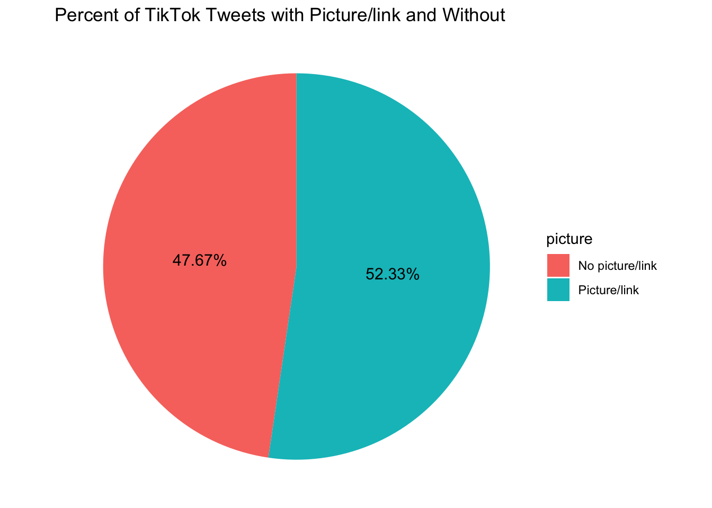
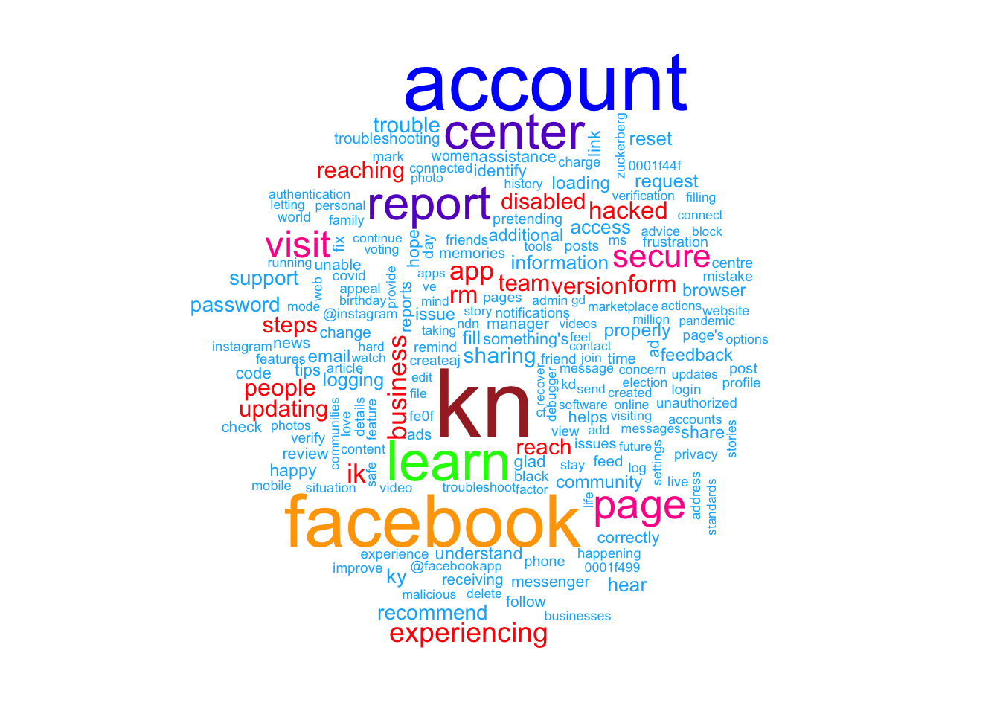
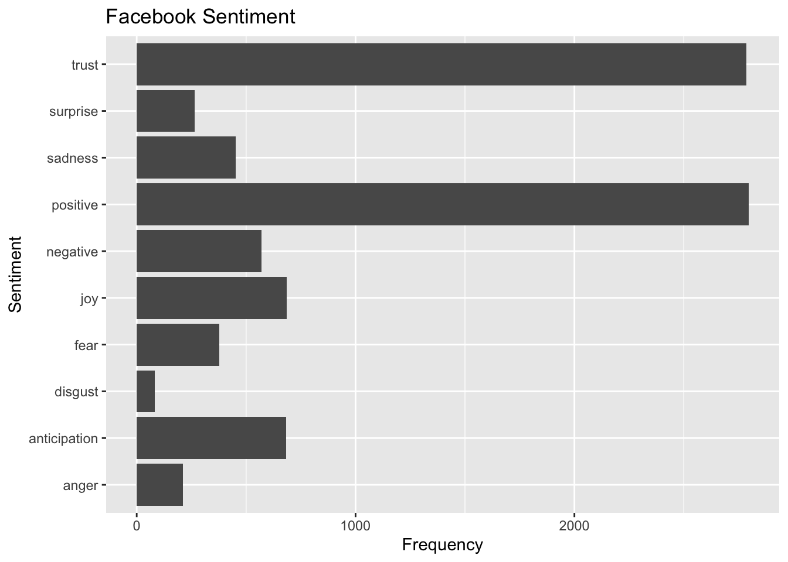
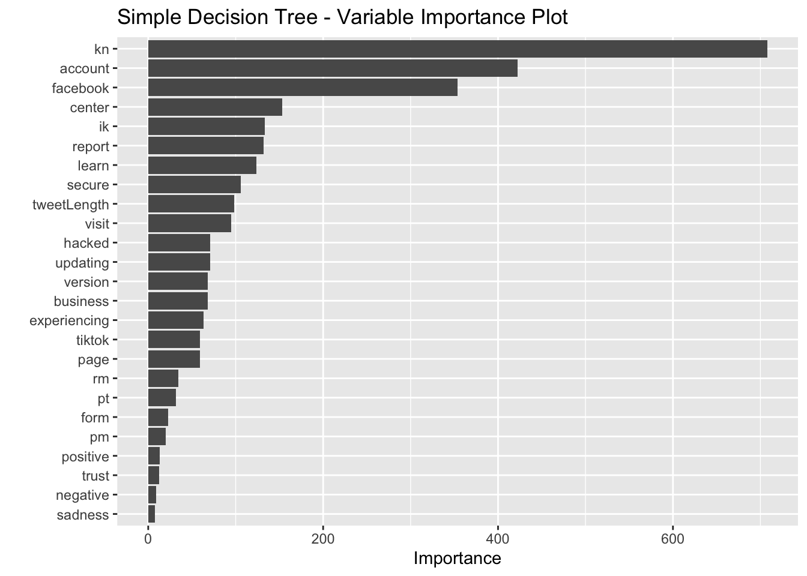

Homework 9 - Alligators
Ammar Plumber, Elaina Lin, Kim Nguyen, Meghan Aines, Ryan Karbowicz
4/13/2021
I. Introduction
We will be examining the difference in tweet communications between TikTok and Facebook. These are two popular social media platforms but with very different target audiences. Thus, the two brands may differ in their communication styles and language. We set out to identify the particular ways in which they differ and to build a model that can attribute each tweet to the correct user.
II. Methodology
First, after getting tweets using the Twitter API and R package rtweet, we use basic tools of data exploration to transform, visualize, and examine different features of the datasets, such as source, time, length, and particular contents (e.g., picture/links) of the tweets. We produce bar charts to visualize the most popular words used by each twitter account, as well as the most popular sentiments associated with tweets that each account produces. A word cloud also helps paint a clearer picture of each company’s most commonly used words.
Second, we transform the datasets into tidytext format for sentiment analysis. The two lexicons that we use are NRC and AFINN.
Finally, we train four different models to predict if a tweet was posted by either Facebook or TikTok. The inputs of these models are as follows:
length of the tweet
the number of times each of the twenty most common words from each account appear
presence of pictures
sentiment words, which reflect anger, anticipation, disgust, negative, postive, trust, joy, surprise, fear and sadness
positive/negative valence, estimated by averaging AFINN scores over each tweet.
The first model is a Simple Decision Tree, the second model is a Bagging Model, the third model is a Random Forest and the fourth model is a Gradient Boosting Model.
We report the residual sum of squares on the training and test sets to determine which models have the smallest differences between the predicted tweeter and actual tweeter. We also show confusion matrices to determine the predictive efficacy of the four models.
III. Setup and Preliminary Analysis
First, we import all non-base packages to be used in this analysis.
library(rtweet)
library(tidyverse)
library(lubridate)
library(scales)
library(tidytext)
library(wordcloud)
library(textdata)
library(caret) # for general model fitting
library(rpart) # for fitting decision trees
library(rpart.plot)
library(ipred) # for fitting bagged decision trees
library(ranger)
library(gbm)
library(vip)
library(kableExtra)Now, we import the tweets that we pulled using the get_timeline() function and saved to a CSV file. There are ~3200 tweets from each user in our dataset.
# Run these two lines to get the tweets
# and then save them as a csv for future use
# tiktok <- get_timeline("tiktok_us", n=3200)
# tiktok %>% write_as_csv('tiktok.csv')
#
# facebook <- get_timeline("Facebook", n=3200)
# facebook %>% write_as_csv("facebook.csv")
tiktok <-
read_csv('tiktok.csv') %>%
select(status_id, source, text, created_at) %>%
as.data.frame()
facebook <-
read_csv('facebook.csv') %>%
select(status_id, source, text, created_at)
nrc <- read_rds("nrc.rds")
facebook %>% head()## # A tibble: 6 x 4
## status_id source text created_at
## <chr> <chr> <chr> <dttm>
## 1 x13820200803434… Twitter We… "Ramadan Mubarak <U+0001F319>\n \nThis #MonthofGood, check out all t… 2021-04-13 17:17:18
## 2 x13817344290186… Khoros CX "@MeenalK1 Hi Meenal. Do you have the reference numbers for your sub… 2021-04-12 22:22:13
## 3 x13817333826320… Khoros CX "@Afrojalipro Thanks for updating us, Afroj! We're so happy to hear … 2021-04-12 22:18:04
## 4 x13817326683881… Khoros CX "@CallandManning Hi Calland. If you do not have access to the phone … 2021-04-12 22:15:14
## 5 x13817113768763… Khoros CX "@BHARTINANDAN4 Hello! Please visit this Help Center article if you … 2021-04-12 20:50:37
## 6 x13817105484761… Khoros CX "@weathermatt22 Hi Matt. Please visit our Help Center to report an i… 2021-04-12 20:47:20Now, for each user, we produce a line chart showing the percent of all tweets from each source by hour.
facebook %>%
count(source, hour = hour(with_tz(created_at, "EST"))) %>%
mutate(percent = n/sum(n)) %>%
ggplot(aes(x = hour, y = percent, color = source)) +
labs(x = "Hour of day (EST)", y = "% of tweets", color = "") +
scale_y_continuous(labels = percent_format()) +
geom_line() +
ggtitle('Facebook Source Breakdown by Hour')
tiktok %>%
count(source, hour = hour(with_tz(created_at, "EST"))) %>%
mutate(percent = n/sum(n)) %>%
ggplot(aes(x = hour, y = percent, color = source)) +
labs(x = "Hour of day (EST)", y = "% of tweets", color = "") +
scale_y_continuous(labels = percent_format()) +
geom_line() +
ggtitle('Tiktok Source Breakdown by Hour')
We see that the vast majority of Facebook’s tweets are put out using Khoros Publishing between the hours of 10 AM and 8 PM. TikTok publishes most of its tweets through the Twitter Web App and Fan Experiences Platform—usually between 10 AM and 8 PM, like Facebook.
We want to see if both users’ tweets tend to differ in length, so we create a histogram for each user.
fb_wordcounts <-
facebook %>%
mutate(tweetLength = str_length(text)) %>%
filter(tweetLength < 500)
tiktok_wordcounts <-
tiktok %>%
mutate(tweetLength = str_length(text)) %>%
filter(tweetLength < 500)
writeLines(c(paste0("Facebook Mean Tweet Length: ",
mean(fb_wordcounts$tweetLength)),
paste0("TikTok Mean Tweet Length: ",
mean(tiktok_wordcounts$tweetLength))))## Facebook Mean Tweet Length: 163.289555972483
## TikTok Mean Tweet Length: 112.557921102066hist(tiktok_wordcounts$tweetLength, main = "TikTok - Histogram of Tweet Lengths")hist(fb_wordcounts$tweetLength, main = "Facebook - Histogram of Tweet Lengths")As we see, TikTok’s tweet lengths are right-skewed, with most tweets being around 100 words long. Facebook, on the other hand, seems to post longer tweets, with a more normal distribution centered around 150 words long. Tweet length seems like a useful feature to include in our predictive model.
Next, we look at whether there is a difference in the share of Tweets that include pictures.
fb_picture_counts <-
facebook %>%
filter(!str_detect(text, '^"')) %>%
count(picture = ifelse(str_detect(text, "t.co"),
"Picture/link", "No picture/link"))
fb_picture_counts <-
fb_picture_counts %>%
mutate(prop = n / sum(fb_picture_counts$n) *100)
tiktok_picture_counts <-
tiktok %>%
filter(!str_detect(text, '^"')) %>%
count(picture = ifelse(str_detect(text, "t.co"),
"Picture/link", "No picture/link"))
tiktok_picture_counts <-
tiktok_picture_counts %>%
mutate(prop = n / sum(tiktok_picture_counts$n) *100)
fb_picture_counts %>%
ggplot(aes(x = "", y = n, fill = picture)) +
geom_bar(width = 1, stat = "identity") +
coord_polar("y", start=0) +
theme_void() +
geom_text(aes(label = paste0(round(prop,2), "%")),
position = position_stack(vjust = 0.5), size = 4) +
ggtitle("Percent of Facebook Tweets with Picture/link and Without")tiktok_picture_counts %>%
ggplot(aes(x = "", y = n, fill = picture)) +
geom_bar(width = 1, stat = "identity") +
coord_polar("y", start=0) +
theme_void() +
geom_text(aes(label = paste0(round(prop,2), "%")),
position = position_stack(vjust = 0.5), size = 4) +
ggtitle("Percent of TikTok Tweets with Picture/link and Without")
~86% of Facebook’s tweets contain pictures/links, while only ~52% of TikTok’s tweets contain pictures/links. This could be another useful predictor to include in our model.
IV. Sentiment Analysis
Now, we split the tweets into tokens so that we can perform sentiment analysis on them.
reg <- "([^A-Za-z\\d#@']|'(?![A-Za-z\\d#@]))"
# Unnest the text strings into a data frame of words
fb_words <-
facebook %>%
filter(!str_detect(text, '^"')) %>%
mutate(text = str_replace_all(text,
"https://t.co/[A-Za-z\\d]+|&",
"")) %>%
unnest_tokens(word, text,
token = "regex",
pattern = reg) %>%
filter(!word %in% stop_words$word,
str_detect(word, "[a-z]"))
tiktok_words <-
tiktok %>%
filter(!str_detect(text, '^"')) %>%
mutate(text = str_replace_all(text,
"https://t.co/[A-Za-z\\d]+|&",
"")) %>%
unnest_tokens(word, text,
token = "regex",
pattern = reg) %>%
filter(!word %in% stop_words$word,
str_detect(word, "[a-z]"))
# Inspect the first six rows of tweet_words
head(fb_words)## # A tibble: 6 x 4
## status_id source created_at word
## <chr> <chr> <dttm> <chr>
## 1 x1382020080343470082 Twitter Web App 2021-04-13 17:17:18 ramadan
## 2 x1382020080343470082 Twitter Web App 2021-04-13 17:17:18 mubarak
## 3 x1382020080343470082 Twitter Web App 2021-04-13 17:17:18 0001f319
## 4 x1382020080343470082 Twitter Web App 2021-04-13 17:17:18 #monthofgood
## 5 x1382020080343470082 Twitter Web App 2021-04-13 17:17:18 check
## 6 x1382020080343470082 Twitter Web App 2021-04-13 17:17:18 kindnessWe produce two horizontal bar graphs that show the most common words along with a word cloud for each user.
fb_most_common <-
fb_words %>%
count(word, sort = TRUE) %>%
head(20) %>%
mutate(word = reorder(word, n))
fb_most_common %>%
ggplot(aes(x = word, y = n)) +
geom_bar(stat = "identity") +
ylab("Occurrences") +
coord_flip() +
ggtitle("Facebook Word Frequency")tiktok_most_common <-
tiktok_words %>%
count(word, sort = TRUE) %>%
head(20) %>%
mutate(word = reorder(word, n))
tiktok_most_common %>%
ggplot(aes(x = word, y = n)) +
geom_bar(stat = "identity") +
ylab("Occurrences") +
coord_flip() +
ggtitle("TikTok Word Frequency")facebook_cloud <-
fb_words %>%
count(word) %>%
arrange(-n)
wordcloud(facebook_cloud$word,
facebook_cloud$n, max.words = 200,
colors = c("#00B2FF", "red",
"#FF0099", "#6600CC",
"green", "orange",
"blue", "brown"))
tiktok_cloud <-
tiktok_words %>%
count(word) %>%
arrange(-n)
wordcloud(tiktok_cloud$word,
tiktok_cloud$n, max.words = 200,
colors = c("#00B2FF", "red",
"#FF0099", "#6600CC",
"green", "orange",
"blue", "brown"))The most common word that Facebook uses is “kn,” and it’s unclear what this means. We did a quick search and found that Facebook signs off a lot of its replies with “-KN.” See here: https://twitter.com/Facebook/status/1185298970832244736
Facebook frequently uses neutral and security-/support-related words: “account,” “report,” “secure,” “experiencing,” etc.
TikTok uses a lot more anticipatory words like “tomorrow,” “prizes,” “nomination,” “winner.” TikTok’s Twitter account actually has a lot of sweepstakes.
Both accounts, of course, reference their own company names frequently.
We will use the number of times these forty words appear as predictors in our model.
We now join the NRC Word-Emotion Association Lexicon to our data, which will allow us to identify words associated with eight basic emotions (anger, fear, anticipation, trust, surprise, sadness, joy, and disgust) and two sentiments (negative and positive).
fb_sentiment <-
inner_join(fb_words, nrc, by = "word")
tiktok_sentiment <-
inner_join(tiktok_words, nrc, by = "word")
fb_sentiment %>% head()## # A tibble: 6 x 5
## status_id source created_at word sentiment
## <chr> <chr> <dttm> <chr> <chr>
## 1 x1382020080343470082 Twitter Web App 2021-04-13 17:17:18 kindness positive
## 2 x1381733382632001536 Khoros CX 2021-04-12 22:18:04 happy anticipation
## 3 x1381733382632001536 Khoros CX 2021-04-12 22:18:04 happy joy
## 4 x1381733382632001536 Khoros CX 2021-04-12 22:18:04 happy positive
## 5 x1381733382632001536 Khoros CX 2021-04-12 22:18:04 happy trust
## 6 x1381733382632001536 Khoros CX 2021-04-12 22:18:04 wonderful joyHere, we compare Facebook’s and TikTok’s sentiments.
fb_sentiment_analysis <-
fb_sentiment %>%
count(word, sentiment) %>%
group_by(sentiment)
fb_sentiment_analysis %>%
top_n(15) %>%
ggplot(aes(x = sentiment, y = n )) +
geom_bar(stat = "identity") +
coord_flip() +
ylab("Frequency") +
xlab("Sentiment") +
labs(title="Facebook Sentiment")
tiktok_sentiment_analysis <-
tiktok_sentiment %>%
count(word, sentiment) %>%
group_by(sentiment)
tiktok_sentiment_analysis %>%
top_n(15) %>%
ggplot(aes(x = sentiment, y = n )) +
geom_bar(stat = "identity") +
coord_flip() +
ylab("Frequency") +
xlab("Sentiment") +
labs(title="TikTok Sentiment")
It looks like Facebook’s tweets use more trust words while TikTok uses more words that reflect anticipation. We now show specifically which words are conveying each of these observed sentiments.
fb_sentiment_analysis %>% filter(!sentiment %in% c("positive", "negative")) %>%
mutate(sentiment = reorder(sentiment, -n),
word = reorder(word, -n)) %>% top_n(10) -> fb_sentiment_analysis2
ggplot(fb_sentiment_analysis2, aes(x=word, y=n, fill = n)) +
facet_wrap(~ sentiment, scales = "free")+
geom_bar(stat ="identity") +
theme(axis.text.x = element_text(angle = 90, hjust = 1)) +
labs(y="count", title="Facebook Sentiment Words")tiktok_sentiment_analysis %>% filter(!sentiment %in% c("positive", "negative")) %>%
mutate(sentiment = reorder(sentiment, -n),
word = reorder(word, -n)) %>% top_n(10) -> tiktok_sentiment_analysis2
ggplot(tiktok_sentiment_analysis2, aes(x=word, y=n, fill = n)) +
facet_wrap(~ sentiment, scales = "free")+
geom_bar(stat ="identity") +
theme(axis.text.x = element_text(angle = 90, hjust = 1)) +
labs(y="count", title="Tik Tok Sentiment Words")Next, we examine texts on Facebook and Tiktok to see their positive-negative score by using the AFINN sentiment lexicon, a list of English terms manually rated for valence with an integer between -5 (negative) and +5 (positive) by Finn Årup Nielsen between 2009 and 2011.
We use this lexicon to compute mean positivity scores for all words tweeted by each user.
# run this to get afinn lexicon and save it as a csv
# get_sentiments ("afinn") -> afinn
#
#afinn %>% write_as_csv("afinn.csv")
afinn <- read_csv('afinn.csv')
fb_afinn <-
inner_join(fb_words,
afinn,
by = "word")
tiktok_afinn <-
inner_join(tiktok_words,
afinn,
by = "word")
fb_mean_afinn <-
fb_afinn %>%
summarise(mean_fb_afinn = mean(value))
tiktok_mean_afinn <-
tiktok_afinn %>%
summarise(mean_tt_afinn = mean(value))
cat(paste0("Average AFINN scores for all words by user\n",
"\nFacebook: ", round(fb_mean_afinn, 3),
"\nTikTok: ", round(tiktok_mean_afinn, 3)))## Average AFINN scores for all words by user
##
## Facebook: 0.785
## TikTok: 1.704Facebook’s mean AFINN value is 0.79 while TikTok’s mean AFINN value is 1.704. In general, words tweeted by Tiktok are more positive than those tweeted by Facebook.
V. Training Predictive Models
Here, using the text of a tweet, we attempt to predict the user who tweeted it.
The features we extracted are tweet length, the number of times each of the twenty most common words from each account appear, the presence of a picture/link, number of words for each sentiment, and mean AFINN score per tweet.
TikTok is encoded as 1, and Facebook is encoded as 0.
First, we prepare the data for training and produce a simple decision tree.
fbcommon <-
lapply(fb_most_common$word, as.character) %>%
unlist()
tiktokcommon <-
lapply(tiktok_most_common$word, as.character) %>%
unlist()
commonwords <- c(tiktokcommon, fbcommon)
fb_word_predict <-
fb_words %>%
filter(word %in% commonwords) %>%
group_by(status_id) %>%
count(word) %>%
ungroup() %>%
pivot_wider(id_cols = status_id,
names_from = word,
values_from = n,
values_fill = 0)
tiktok_word_predict <-
tiktok_words %>%
filter(word %in% commonwords) %>%
group_by(status_id) %>%
count(word) %>%
ungroup() %>%
pivot_wider(id_cols = status_id,
names_from = word,
values_from = n,
values_fill = 0)
fb_piclinks <-
facebook %>%
filter(!str_detect(text, '^"')) %>%
mutate(picture_link = ifelse(str_detect(text, "t.co"),
1, 0)) %>%
select(1,5)
tiktok_piclinks <-
tiktok %>%
filter(!str_detect(text, '^"')) %>%
mutate(picture_link = ifelse(str_detect(text, "t.co"),
1, 0)) %>%
select(1,5)
fb_tweet_afinn <-
fb_afinn %>%
group_by(status_id) %>%
summarize(afinn = mean(value))## `summarise()` ungrouping output (override with `.groups` argument)tiktok_tweet_afinn <-
tiktok_afinn %>%
group_by(status_id) %>%
summarize(afinn = mean(value))## `summarise()` ungrouping output (override with `.groups` argument)fb_sentiment_counts <-
fb_sentiment %>%
group_by(status_id) %>%
count(sentiment) %>%
ungroup() %>%
pivot_wider(id_cols = status_id,
names_from = sentiment,
values_from = n,
values_fill = 0)
tiktok_sentiment_counts <-
tiktok_sentiment %>%
group_by(status_id) %>%
count(sentiment) %>%
ungroup() %>%
pivot_wider(id_cols = status_id,
names_from = sentiment,
values_from = n,
values_fill = 0)
tiktok_feature_selection <-
tiktok_wordcounts %>%
mutate(user = 1) %>%
left_join(tiktok_sentiment_counts,
by="status_id") %>%
left_join(tiktok_tweet_afinn,
by="status_id") %>%
left_join(tiktok_piclinks,
by="status_id") %>%
left_join(tiktok_word_predict,
by = "status_id")
facebook_feature_selection <-
fb_wordcounts %>%
mutate(user = 0) %>%
left_join(fb_sentiment_counts,
by="status_id") %>%
left_join(fb_tweet_afinn,
by="status_id") %>%
left_join(fb_piclinks,
by="status_id") %>%
left_join(fb_word_predict,
by = "status_id")
both_users <-
tiktok_feature_selection %>%
dplyr::bind_rows(facebook_feature_selection) %>%
mutate_if(is.numeric,coalesce,0)
set.seed(123)
index <-
createDataPartition(both_users$user,
p = 0.8, list = FALSE)
for_decisiontree <-
both_users %>% select(-1,-2,-3,-4)
train <- for_decisiontree[index, ]
test <- for_decisiontree[-index, ]
colnames(train) <- make.names(colnames(train))
colnames(test) <- make.names(colnames(test))
set.seed(123)
simple_model <- rpart(user ~ .,
data = train, method = "class")
rpart.plot(simple_model, yesno = 2)It seems that the most dominant predictors in the simple model were the presence (or non-presence) of Facebook’s most common words, along with tweet length and the presence of the word “tiktok.” I suspect this will be similar for other models, though perhaps sentiment will play a role too.
We produce additional models using the bagging, random forests, and gradient boosting methods.
set.seed(123)
bagging_model <- train(
user ~ .,
data = train,
method = "treebag",
trControl = trainControl(method = "oob"),
keepX = T,
nbagg = 100,
importance = "impurity",
control = rpart.control(minsplit = 2, cp = 0)
)
n_features <- length(setdiff(names(train), "user"))
train$user <- as.factor(train$user)
rf_model <- ranger(
user ~ .,
data = train,
mtry = floor(n_features * 0.5),
respect.unordered.factors = "order",
importance = "permutation",
seed = 123
)
set.seed(123) # for reproducibility
train$user <- as.numeric(train$user)-1
gbm_model <- gbm(
formula = user ~ .,
data = train,
distribution = "gaussian", # SSE loss function
n.trees = 1000,
shrinkage = 0.05,
interaction.depth = 5,
n.minobsinnode = 4,
cv.folds = 10
)We also display four variable importance plots to see which variables each model identified as significant.
vip(simple_model, num_features = 25) +
ggtitle('Simple Decision Tree - Variable Importance Plot')
vip(bagging_model, num_features = 25) +
ggtitle('Bagging - Variable Importance Plot')vip(rf_model, num_features = 25) +
ggtitle('Random Forests - Variable Importance Plot')vip(gbm_model, num_features = 25) +
ggtitle('Gradient Boosting - Variable Importance Plot')It seems that the simple decision tree, random forests model, and gradient boosting model placed the most importance on the presence of the word “kn” and the other commonly used words. The bagging model, on the other hand places little importance on the presence of these words and instead privileges tweet length, AFINN score, and sentiments. All of the ensemble methods identified tweet length as strongly predictive of the user. All four heavily weighted anticipation sentiments and AFINN scores.
VI. Results and Discussion
Now, I produce confusion matrices and show residual sum of squares for all tree-based methods—first evaluating their performance on the training set and then on the test set. Note again that a Tiktok tweet is encoded as 1, and a Facebook tweet is encoded as 0. The code is shown for the first matrix but not for subsequent ones for the sake of elegance.
Training Set Performance
Simple Decision Tree - Training Set:
## [1] 1 0
## Levels: 0 1## Confusion Matrix and Statistics
##
## Reference
## Prediction 0 1
## 0 2300 108
## 1 247 2459
##
## Accuracy : 0.9306
## 95% CI : (0.9233, 0.9374)
## No Information Rate : 0.502
## P-Value [Acc > NIR] : < 2.2e-16
##
## Kappa : 0.8611
##
## Mcnemar's Test P-Value : 2.402e-13
##
## Precision : 0.9551
## Recall : 0.9030
## F1 : 0.9284
## Prevalence : 0.4980
## Detection Rate : 0.4497
## Detection Prevalence : 0.4709
## Balanced Accuracy : 0.9305
##
## 'Positive' Class : 0
## Bagging Method - Training Set:
## Confusion Matrix and Statistics
##
## Reference
## Prediction 0 1
## 0 2512 3
## 1 35 2564
##
## Accuracy : 0.9926
## 95% CI : (0.9898, 0.9947)
## No Information Rate : 0.502
## P-Value [Acc > NIR] : < 2.2e-16
##
## Kappa : 0.9851
##
## Mcnemar's Test P-Value : 4.934e-07
##
## Precision : 0.9988
## Recall : 0.9863
## F1 : 0.9925
## Prevalence : 0.4980
## Detection Rate : 0.4912
## Detection Prevalence : 0.4918
## Balanced Accuracy : 0.9925
##
## 'Positive' Class : 0
## Random Forests Method - Training Set:
## Confusion Matrix and Statistics
##
## Reference
## Prediction 0 1
## 0 2504 3
## 1 43 2564
##
## Accuracy : 0.991
## 95% CI : (0.988, 0.9934)
## No Information Rate : 0.502
## P-Value [Acc > NIR] : < 2.2e-16
##
## Kappa : 0.982
##
## Mcnemar's Test P-Value : 8.912e-09
##
## Precision : 0.9988
## Recall : 0.9831
## F1 : 0.9909
## Prevalence : 0.4980
## Detection Rate : 0.4896
## Detection Prevalence : 0.4902
## Balanced Accuracy : 0.9910
##
## 'Positive' Class : 0
## Gradient Boosting Method - Training Set:
## Confusion Matrix and Statistics
##
## Reference
## Prediction 0 1
## 0 2374 55
## 1 173 2512
##
## Accuracy : 0.9554
## 95% CI : (0.9494, 0.9609)
## No Information Rate : 0.502
## P-Value [Acc > NIR] : < 2.2e-16
##
## Kappa : 0.9108
##
## Mcnemar's Test P-Value : 9.297e-15
##
## Precision : 0.9774
## Recall : 0.9321
## F1 : 0.9542
## Prevalence : 0.4980
## Detection Rate : 0.4642
## Detection Prevalence : 0.4750
## Balanced Accuracy : 0.9553
##
## 'Positive' Class : 0
## Performance Summary and RSS
| type | total_errors | accuracy |
|---|---|---|
| Simple | 355 | 0.9305827 |
| Bagging | 38 | 0.9925694 |
| Random Forests | 46 | 0.9910051 |
| Gradient Boosting | 228 | 0.9554165 |
The rankings for accuracy on the training set are as follows:
Bagging method
Random forests
Gradient boosting method
Simple decision tree
The bagging and random forests methods achieved impressive accuracy on the training set, both able to correctly classify more than 99% of the tweets.
We show the residual sum of squares for all four models on the training set below.
rss_simple_train <- sum((actual_train-simple_pred_train)^2)
rss_bagging_train <- sum((actual_train-bagging_pred_train)^2)
rss_rf_train <- sum((actual_train-rf_pred_train)^2)
rss_gb_train <- sum((actual_train-gb_pred_train)^2)
cat(paste0("Residual Sum of Squares on Training Set\n",
"\nSimple decision tree: ", round(rss_simple_train, 2),
"\nBagging model: ", round(rss_bagging_train, 2),
"\nRandom forests model: ", round(rss_rf_train, 2),
"\nGradient boosting model: ", round(rss_gb_train, 2)))## Residual Sum of Squares on Training Set
##
## Simple decision tree: 299.52
## Bagging model: 56.46
## Random forests model: 46
## Gradient boosting model: 187.74The random forests method had the lowest RSS, despite the bagging method achieving higher predictive accuracy on the training set. The bagging method performed second best, followed by the gradient boosting method and simple decision tree.
Now, we show confusion matrices for the test set.
Test Set Performance
Simple Decision Tree - Test Set:
actual_test <- test$user
simple_pred_test <-
predict(simple_model, newdata = test) %>%
as_tibble() %>%
select(2) %>%
unlist() %>%
as.vector()
simple_test_confusion <-
confusionMatrix(data = factor(round(simple_pred_test)),
reference = factor(actual_test), mode = "prec_recall")
simple_test_errors <-
simple_test_confusion$table[2] +
simple_test_confusion$table[3]
simple_test_accuracy <-
as.numeric(simple_test_confusion$overall[1])
simple_test_confusion## Confusion Matrix and Statistics
##
## Reference
## Prediction 0 1
## 0 583 23
## 1 68 604
##
## Accuracy : 0.9288
## 95% CI : (0.9133, 0.9423)
## No Information Rate : 0.5094
## P-Value [Acc > NIR] : < 2.2e-16
##
## Kappa : 0.8577
##
## Mcnemar's Test P-Value : 3.979e-06
##
## Precision : 0.9620
## Recall : 0.8955
## F1 : 0.9276
## Prevalence : 0.5094
## Detection Rate : 0.4562
## Detection Prevalence : 0.4742
## Balanced Accuracy : 0.9294
##
## 'Positive' Class : 0
## Bagging Method - Test Set:
## Confusion Matrix and Statistics
##
## Reference
## Prediction 0 1
## 0 603 30
## 1 48 597
##
## Accuracy : 0.939
## 95% CI : (0.9244, 0.9515)
## No Information Rate : 0.5094
## P-Value [Acc > NIR] : < 2e-16
##
## Kappa : 0.878
##
## Mcnemar's Test P-Value : 0.05425
##
## Precision : 0.9526
## Recall : 0.9263
## F1 : 0.9393
## Prevalence : 0.5094
## Detection Rate : 0.4718
## Detection Prevalence : 0.4953
## Balanced Accuracy : 0.9392
##
## 'Positive' Class : 0
## Random Forests Method - Test Set:
## Confusion Matrix and Statistics
##
## Reference
## Prediction 0 1
## 0 602 27
## 1 49 600
##
## Accuracy : 0.9405
## 95% CI : (0.9261, 0.9529)
## No Information Rate : 0.5094
## P-Value [Acc > NIR] : <2e-16
##
## Kappa : 0.8811
##
## Mcnemar's Test P-Value : 0.016
##
## Precision : 0.9571
## Recall : 0.9247
## F1 : 0.9406
## Prevalence : 0.5094
## Detection Rate : 0.4710
## Detection Prevalence : 0.4922
## Balanced Accuracy : 0.9408
##
## 'Positive' Class : 0
## Gradient Boosting Method - Test Set:
## Confusion Matrix and Statistics
##
## Reference
## Prediction 0 1
## 0 596 22
## 1 55 605
##
## Accuracy : 0.9397
## 95% CI : (0.9253, 0.9522)
## No Information Rate : 0.5094
## P-Value [Acc > NIR] : < 2.2e-16
##
## Kappa : 0.8796
##
## Mcnemar's Test P-Value : 0.0002656
##
## Precision : 0.9644
## Recall : 0.9155
## F1 : 0.9393
## Prevalence : 0.5094
## Detection Rate : 0.4664
## Detection Prevalence : 0.4836
## Balanced Accuracy : 0.9402
##
## 'Positive' Class : 0
## Performance Summary and RSS
| type | total_errors | accuracy |
|---|---|---|
| Simple | 91 | 0.9287950 |
| Bagging | 78 | 0.9389671 |
| Random Forests | 76 | 0.9405321 |
| Gradient Boosting | 77 | 0.9397496 |
The rankings for accuracy on the test set are as follows:
Gradient boosting method
Random forests method
Bagging method
Simple decision tree
It is worth noting though, that the differences in accuracy between the first three is incredibly small, so perhaps the tie may be broken using RSS with respect to the test set:
rss_simple_test <- sum((actual_test-simple_pred_test)^2)
rss_bagging_test <- sum((actual_test-bagging_pred_test)^2)
rss_rf_test <- sum((actual_test-rf_pred_test)^2)
rss_gb_test <- sum((actual_test-gb_pred_test)^2)
cat(paste0("Residual Sum of Squares on Test Set\n",
"\nSimple decision tree: ", round(rss_simple_test, 2),
"\nBagging model: ", round(rss_bagging_test, 2),
"\nRandom forests model: ", round(rss_rf_test, 2),
"\nGradient boosting model: ", round(rss_gb_test, 2)))## Residual Sum of Squares on Test Set
##
## Simple decision tree: 77.23
## Bagging model: 58.6
## Random forests model: 76
## Gradient boosting model: 60.05The bagging model had the lowest RSS on the test set even though it was only second best for the training set. The gradient boosting model had the second lowest RSS, followed by random forests and the simple decision tree.
In sum, it seems that the best model would be either the bagging model or the gradient boosting model, but this is nitpicking because all of the ensemble methods performed very well, with accuracy scores above 93%.
VII. Conclusion
Looking at the analyses, it seems that the Facebook and TikTok accounts have systematically different Twitter presences. Facebook seems to respond more frequently to user fears, which are associated with words such as “secure” and “trust.” Whereas, TikTok focuses on generating excitement and offer prize giveaways, which is associated with “anticipation” words such as “winning” and “tomorrow.” Differences in tweet length also possibly reflect on the preferences of the target audience; TikTok users are younger and less likely to consume written information (it is a video platform, after all), and the opposite is true for Facebook. In sum, our predictive endeavor was successful, and we unveiled a number of useful insights from it.
VIII. Contributions
As the authorship indicates, four teammates contributed to this analysis: Ammar Plumber, Elaina Lin, Kim Nguyen, and Meghan Aines.